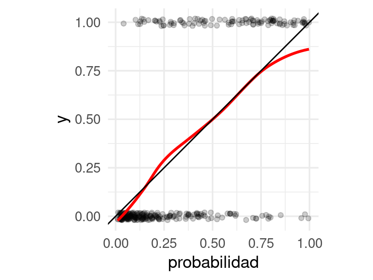
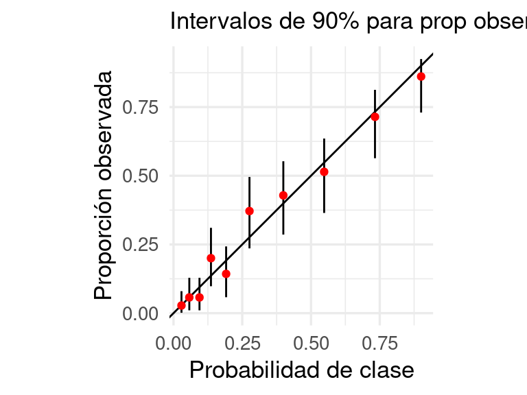
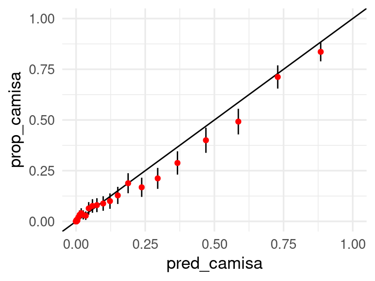
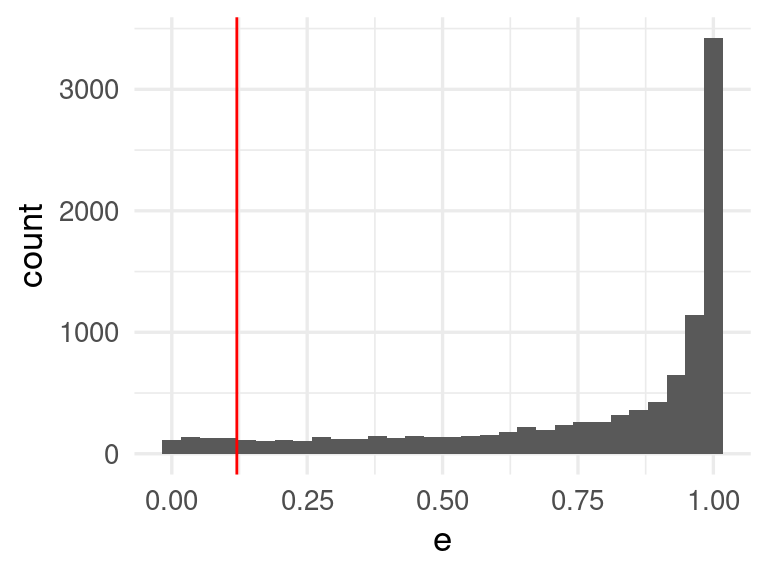
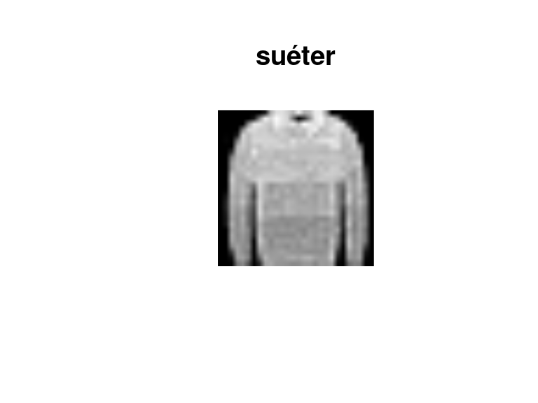
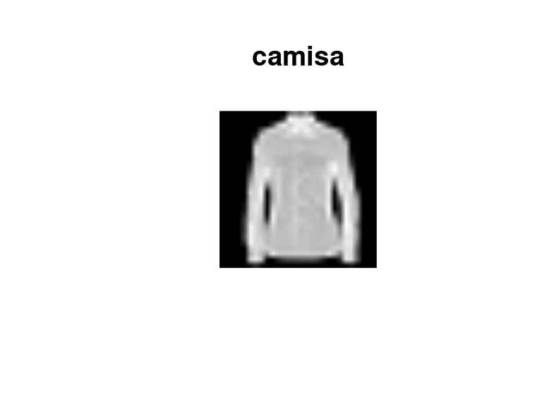
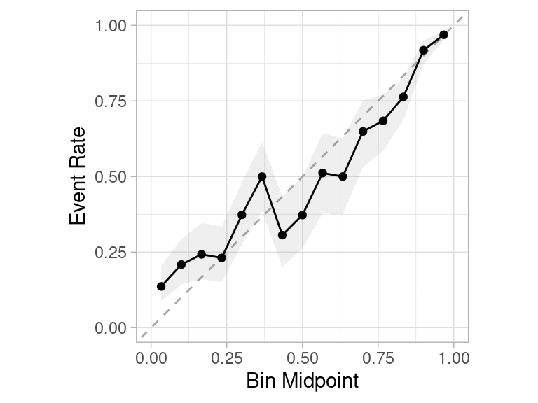
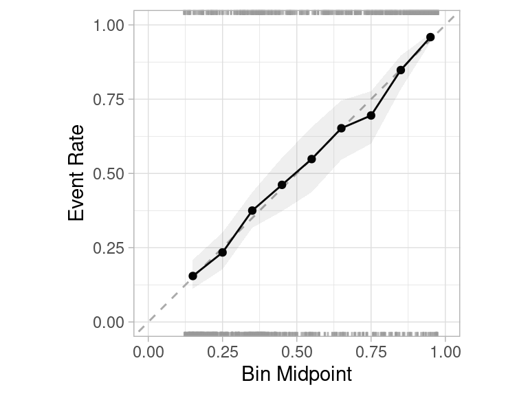

library(tidyverse)
library(tidymodels)
library(gt)
diabetes_pr <- as_tibble(MASS::Pima.te)
diabetes_pr$id <- 1:nrow(diabetes_pr)
flujo_diabetes <- read_rds("cache/flujo_ajustado_diabetes.rds")10 Calibración de probabilidades
En los problemas de clasificación generalmente no conseguimos clasificación perfecta, y buscamos que nuestras probabilidades estimadas expresen qué grado de confianza tenemos en que ocurra cada categorías. Para lograr esto, necesitamos checar que las probabilidades que producimos expresan esta incertidumbre correctamente, y no son simplemente scores de creencia de que una clase u otra va a ocurrir.
En esta sección trataremos de cómo checar estas probabilidades, y qué técnicas podemos usar para expresar confiablemente (y con supuestos mínimos) incertidumbre al hacer predicciones de clase.
10.1 Calibración de probabilidades
En un principio podemos considerar las probabilidades estimadas en nuestros predictores como scores que califican qué tan creíble es que una observación particular sea de una categoría o clase dada. Sin embargo, quisiéramos interpretarlas también de manera frecuentista, como frecuencia relativa de ocurrencia de eventos a largo plazo. Esto nos permite utilizarlas en procesos downstream y en la toma de decisiones de manera más efectiva.
Por ejemplo, en pronósticos meteorológicos, todos los días expresan una probabilidad de lluvia. Resulta ser que entre aquellos días donde los metereológos dicen que hay 10% de lluvia, en 1 de cada 10 llueve en realidad. Entre aquellos días donde dicen que hay 90% de probabilidad de lluvia, aproximadamente 9 de cada 10 días llueve. Esto quiere decir que estos pronósticos probabilísticos de la meteorología están bien calibrados, independientemente de nuestra interpretación de esas probabilidades como grados de creencia.
Igual que buscábamos que nuestros intervalos predictivos estuvieran bien calibrados en los problemas de regresión, también buscamos que nuestras predictores en clasificación estén probabilísticamente bien calibrados. Es decir: lo que decimos que puede ocurrir con 10% de probabilidad ocurre efectivamente 1 de cada 10 veces, si decimos 20% entonces ocurre 2 de 20, etc.
Podemos hacer esto realizando pruebas de la calibración de las probabilidades que arroja el modelo. Esto quiere decir que si el modelo nos dice que la probabilidad de que la clase 1 es 0.8, entonces si tenemos un número grande de estos casos (con probabilidad 0.8), alrededor de 80% de éstos tienen que ser positivos.
Ejemplo: diabetes
Podemos checar la calibración de nuestro modelo para el ejemplo de diabetes de la sección anterior
Aquí están las probabilidades estimadas de tener diabetes sobre la muestra de prueba:
proba_mod <- predict(flujo_diabetes, diabetes_pr, type = "prob")
dat_calibracion <- tibble(obs = diabetes_pr |> pull(type),
probabilidad = proba_mod$.pred_Yes) |>
mutate(y = ifelse(obs == "Yes", 1, 0))
dat_calibracion |> head() |> gt()| obs | probabilidad | y |
|---|---|---|
| Yes | 0.76840395 | 1 |
| No | 0.04030505 | 0 |
| No | 0.02529504 | 0 |
| Yes | 0.04134683 | 1 |
| Yes | 0.79595860 | 1 |
| Yes | 0.73516870 | 1 |
Para ver si estas probabilidades son realistas, podemos por ejemplo hacer una gráfica como la que sigue:
ggplot(dat_calibracion, aes(x = probabilidad, y = y)) +
geom_jitter(width = 0, height = 0.02, alpha = 0.2) +
geom_smooth(method = "loess", span = 0.7, colour = "red", se = FALSE) +
geom_abline() +
coord_equal()`geom_smooth()` using formula = 'y ~ x'
Y en esta gráfica verificamos que los promedios locales de proporciones de 0-1’s son consistentes con las probabilidades que estimamos.
10.2 Gráficas de calibración binaria
Otra manera de hacer esta gráfica es cortando las probabilidades en cubetas y calculando intervalos de credibilidad para cada estimación: con esto checamos si el observado es consistente con las probabilidades de clase.
Pruebas de calibración
Sobre una muestra de prueba y para un problema de clasificación binaria, donde \(\hat{p} (x)\) es la probabilidad estimada de la clase 1:
- Producimos las probabilidades de clase \(\hat{p}(\mathbf{x}^{(i)}).\)
- Ordenamos estas probabilidades de clase de la más grande a la más chica, y las agrupamos en cubetas \(C_1, C_2, \ldots, C_r\).
- Calculamos en cada cubeta la probabilidad de clase promedio y el porcentaje de casos de clase 1.
Si en cada cubeta la probabilidad de clase promedio y el porcentaje de casos de clase 1 son consistentes (similares módulo variación muestral), entonces decimos que nuestras probabilidades pasan esta prueba de calibración.
Ejemplo: diabetes
# usamos intervalos suavizados (bayesiano beta-binomial) en lugar de los basados
# en los errores estándar sqrt(p*(1-p) / n)
calibracion_gpos <- dat_calibracion |>
mutate(proba_grupo = cut(probabilidad,
quantile(probabilidad, seq(0, 1, 0.1)), include.lowest = TRUE)) |>
group_by(proba_grupo) |>
summarise(prob_media = mean(probabilidad),
n = n(),
obs = sum(y), .groups = "drop") |>
mutate(obs_prop = (obs + 1) / (n + 2),
inferior = qbeta(0.05, obs + 1, n - obs + 2),
superior = qbeta(0.95, obs + 1, n - obs + 2))
calibracion_gpos |> gt() |> fmt_number(where(is_double), decimals = 3)| proba_grupo | prob_media | n | obs | obs_prop | inferior | superior |
|---|---|---|---|---|---|---|
| [0.00988,0.0412] | 0.029 | 34 | 0.000 | 0.028 | 0.001 | 0.080 |
| (0.0412,0.0714] | 0.057 | 33 | 1.000 | 0.057 | 0.010 | 0.129 |
| (0.0714,0.114] | 0.094 | 33 | 1.000 | 0.057 | 0.010 | 0.129 |
| (0.114,0.158] | 0.136 | 33 | 6.000 | 0.200 | 0.098 | 0.311 |
| (0.158,0.224] | 0.191 | 33 | 4.000 | 0.143 | 0.058 | 0.243 |
| (0.224,0.334] | 0.276 | 33 | 12.000 | 0.371 | 0.236 | 0.496 |
| (0.334,0.454] | 0.399 | 33 | 14.000 | 0.429 | 0.286 | 0.553 |
| (0.454,0.65] | 0.548 | 33 | 17.000 | 0.514 | 0.365 | 0.635 |
| (0.65,0.805] | 0.733 | 33 | 24.000 | 0.714 | 0.564 | 0.813 |
| (0.805,0.997] | 0.901 | 34 | 30.000 | 0.861 | 0.730 | 0.925 |
ggplot(calibracion_gpos,
aes(x = prob_media, y = obs_prop, ymin = inferior, ymax = superior)) +
geom_abline() +
geom_linerange() +
geom_point(colour = "red") + coord_equal() +
xlab("Probabilidad de clase") +
ylab("Proporción observada") +
labs(subtitle = "Intervalos de 90% para prop observada")
Y con esto verificamos que calibración del modelo es razonable, y que es razonable usar estas probabilidades para tomar decisiones o incluir en ejercicios de simulación.
Observación: 1. Si las probabilidades no están calibradas, y las queremos utilizar como tales (no simplemente como scores), entonces puede ser necesario hacer un paso adicional de calibración, con una muestra separada de calibración (ver por ejemplo Kuhn y Johnson (2013), sección 11.1). 2. En este ejemplo construimos intervalos para las proporciones observadas usando intervalos bayesianos. Es posible usar intervalos normales o t (usando el error estándar), pero estos intervalos tienen cobertura mala para proporciones muy chicas o muy grandes Binomial proportion wikipedia. Nuestro ejemplo es similar a los intervalos de Agresti-Coull.
10.3 Ejemplo: artículos de ropa
Regresamos a nuestro modelo para clasificar imágenes de artículos de ropa:
library(keras3)
ropa_datos <- dataset_fashion_mnist()
ropa_prueba <- ropa_datos$test
# estas son las categorias:
articulos <- c("playera/top", "pantalón", "suéter", "vestido", "abrigo", "sandalia",
"camisa", "tenis", "bolsa", "bota")
etiquetas_tbl <- tibble(codigo = 0:9, articulo = articulos)
x_prueba <- ropa_prueba$x / 255
y_prueba <- to_categorical(ropa_prueba$y, 10)
modelo <- load_model("cache/red_ropa_1.keras")preds_mat <- predict(modelo, x_prueba)313/313 - 0s - 704us/stepcolnames(preds_mat) <- articulos
preds_tbl <- as_tibble(preds_mat) |>
mutate(id = 1:nrow(preds_mat), .before = 1) |>
mutate(codigo = ropa_prueba$y) |>
left_join(etiquetas_tbl)
preds_tbl |> head() |> gt() |> fmt_number(where(is_double), decimals = 3)| id | playera/top | pantalón | suéter | vestido | abrigo | sandalia | camisa | tenis | bolsa | bota | codigo | articulo |
|---|---|---|---|---|---|---|---|---|---|---|---|---|
| 1 | 0.000 | 0.000 | 0.000 | 0.000 | 0.000 | 0.113 | 0.000 | 0.065 | 0.007 | 0.815 | 9 | bota |
| 2 | 0.000 | 0.000 | 0.923 | 0.000 | 0.013 | 0.000 | 0.063 | 0.000 | 0.000 | 0.000 | 2 | suéter |
| 3 | 0.000 | 1.000 | 0.000 | 0.000 | 0.000 | 0.000 | 0.000 | 0.000 | 0.000 | 0.000 | 1 | pantalón |
| 4 | 0.000 | 1.000 | 0.000 | 0.000 | 0.000 | 0.000 | 0.000 | 0.000 | 0.000 | 0.000 | 1 | pantalón |
| 5 | 0.200 | 0.000 | 0.102 | 0.010 | 0.060 | 0.000 | 0.626 | 0.000 | 0.002 | 0.000 | 6 | camisa |
| 6 | 0.002 | 0.996 | 0.000 | 0.000 | 0.001 | 0.000 | 0.000 | 0.000 | 0.000 | 0.000 | 1 | pantalón |
Nuestra gráfica de calibración para la categoría camisa es:
preds_tbl |> select(camisa, articulo) |>
mutate(obs_camisa = articulo == "camisa") |>
mutate(grupo_prob = cut_number(camisa, 40)) |>
group_by(grupo_prob) |>
summarise(n = n(),
pred_camisa = mean(camisa),
prop_camisa = mean(obs_camisa)) |>
mutate(ee = sqrt(prop_camisa * (1 - prop_camisa) / n)) |>
ggplot(aes(x = pred_camisa, y = prop_camisa, ymin = prop_camisa - 2*ee,
ymax = prop_camisa + 2* ee)) +
geom_abline() +
geom_linerange() +
geom_point(colour = "red") + xlim(0,1) + ylim(0,1)Warning: Removed 3 rows containing missing values or values outside the scale range
(`geom_segment()`).
Vemos que la calibración no es muy mala, al menos para la categoría de camisa. Podemos checar otras categorías de esta manera. Calibrar estas probabilidades puede ser más difícil, pero podemos construir regiones conformes con garantías de cobertura como mostramos abajo:
10.4 Regiones conformes para clasificación
Podemos construir conjuntos de predicción con la técnica de predicción conforme con muestra de prueba, siguiendo ideas de (Angelopoulos y Bates 2021), ver aquí también.
En este caso, no es necesario tener probabilidades calibradas, pero los conjuntos de predicción que obtendremos tendrán garantía de cobertura correcta promedio.
preds_larga_tbl <- preds_tbl |>
pivot_longer(`playera/top`:bota, names_to = "articulo_prob", values_to = "prob") |>
group_by(id) |>
arrange(id, desc(prob)) |>
mutate(clase_verdadera = articulo == articulo_prob) |>
mutate(acumulado = cumsum(clase_verdadera))
e_valores <- preds_larga_tbl |>
filter(clase_verdadera) |>
group_by(id) |>
summarise(e = sum(prob))
q <- quantile(e_valores$e, prob = 0.05)
e_valores |> ggplot(aes(x = e)) + geom_histogram() +
geom_vline(xintercept = q, colour = "red")`stat_bin()` using `bins = 30`. Pick better value with `binwidth`.
conjuntos_conf <- preds_larga_tbl |> group_by(id) |>
filter(prob > q) |>
select(id, articulo = articulo_prob, prob)
conjuntos_conf# A tibble: 14,571 × 3
# Groups: id [10,000]
id articulo prob
<int> <chr> <dbl>
1 1 bota 0.815
2 2 suéter 0.923
3 3 pantalón 1.00
4 4 pantalón 1.00
5 5 camisa 0.626
6 5 playera/top 0.200
7 6 pantalón 0.996
8 7 abrigo 0.938
9 8 camisa 0.781
10 8 abrigo 0.170
# ℹ 14,561 more rowsY así se ve el tamaño de los conjuntos conformes. La mayoría consiste de una sola clase (con probabilidad de 95%), pero muchos tienen 2 o 3 categorías posibles, de modo que el desempeño de nuestro modelo no es excelente.
conjuntos_conf |> count(id) |>
group_by(n) |> count()Storing counts in `nn`, as `n` already present in input
ℹ Use `name = "new_name"` to pick a new name.# A tibble: 5 × 2
# Groups: n [5]
n nn
<int> <int>
1 1 6442
2 2 2638
3 3 834
4 4 79
5 5 7Por ejemplo:
filter(conjuntos_conf, id == 21)# A tibble: 3 × 3
# Groups: id [1]
id articulo prob
<int> <chr> <dbl>
1 21 suéter 0.645
2 21 camisa 0.212
3 21 playera/top 0.140library(imager)
plot(as.cimg(t(ropa_prueba$x[21,,])), axes = FALSE, main = articulos[ropa_prueba$y[21] + 1])
id_1 <- 27
ejemplo_conf <- filter(conjuntos_conf |> ungroup(), id == id_1)
ejemplo_conf# A tibble: 1 × 3
id articulo prob
<int> <chr> <dbl>
1 27 camisa 0.891plot(as.cimg(t(ropa_prueba$x[id_1,,])), axes = FALSE, main = articulos[ropa_prueba$y[id_1] + 1])
10.5 Calibración de probabilidades
Cuando la calibración no es muy buena, es posible seguir el camino de predicción conforme de clase, o podemos también intentar un proceso de calibración. La idea es construir una funcion \({f}_{cal}\) tal que si \(p'(x) = f_{cal}(p(x))\) , las probabilidades dadas por \(p'(x)\) tienen buena calibración.
Los métodos más comunes son:
- Aplicar regresión logística (quizá con splines, por ejemplo), usando la probabilidad/score del modelo original como variable de entrada, y la respuesta como la variable de salida.
- Aplicar regresión isotónica, que es similar pero restringe a que la calibración preserve el orden de las probabilidades/scores del modelo original.
Existen otros métodos ( ver por ejemplo https://www.tidymodels.org/learn/models/calibration/)
Veamos un ejemplo donde queremos contruir un modelo para predecir que células están correctamente segmentadas y cuáles no, bajo un método que se llama High content screening. Las clases son PS (poorly segmented) y WS (well segmented):
data(cells)
dim(cells)[1] 2019 58cells$case <- NULL
cells |> count(class)# A tibble: 2 × 2
class n
<fct> <int>
1 PS 1300
2 WS 719library(probably)
Attaching package: 'probably'The following objects are masked from 'package:base':
as.factor, as.orderedlibrary(discrim)
Attaching package: 'discrim'The following object is masked from 'package:dials':
smoothnessset.seed(128)
split <- initial_split(cells, strata = class)
cells_tr <- training(split)
cells_te <- testing(split)
cells_rs <- vfold_cv(cells_tr, v = 10, strata = class)
discrim_wflow <-
workflow() |>
add_formula(class ~ .) |>
add_model(discrim_linear(engine = "MASS") |> set_mode("classification"))
metricas <- metric_set(roc_auc, brier_class)
discrim_res <-
discrim_wflow |>
fit_resamples(resamples = cells_rs,
metrics = metricas,
control = control_resamples(save_pred = TRUE))→ A | warning: variables are collinearThere were issues with some computations A: x1There were issues with some computations A: x2There were issues with some computations A: x10collect_metrics(discrim_res)# A tibble: 2 × 6
.metric .estimator mean n std_err .config
<chr> <chr> <dbl> <int> <dbl> <chr>
1 brier_class binary 0.136 10 0.00281 Preprocessor1_Model1
2 roc_auc binary 0.879 10 0.00411 Preprocessor1_Model1cal_plot_breaks(discrim_res, num_breaks = 15)
Corremos ahora validación con regresión logística com ejemplo:
logit_val <- probably::cal_validate_logistic(discrim_res,
metrics = metricas, save_pred = TRUE)
collect_metrics(logit_val)# A tibble: 4 × 7
.metric .type .estimator mean n std_err .config
<chr> <chr> <chr> <dbl> <int> <dbl> <chr>
1 brier_class uncalibrated binary 0.136 10 0.00281 config
2 roc_auc uncalibrated binary 0.879 10 0.00411 config
3 brier_class calibrated binary 0.134 10 0.00296 config
4 roc_auc calibrated binary 0.879 10 0.00411 config Y el resultado es ahora como sigue:
collect_predictions(logit_val) |>
filter(.type == "calibrated") |>
cal_plot_breaks(truth = class, estimate = .pred_PS) 